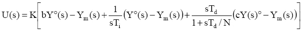

| AutotunerPID Toolkit | |
The ISA-PID Regulator
Several PID structure are available in literature: the regulator used in this application is the so called "ISA PID", that is widely accepted in the industrial domain. The ISA PID control law is expressed as
where Y0(s), Ym(s) and U(s) are, respectively, the Laplace transforms of the set-point (SP), the (measurement of the) controlled variable or process value (PV), and the control signal or control variable (CV), K is the PID gain, Ti the integral time, and Td the derivative time. The ISA PID encompasses the set-point weights b and c in the proportional and derivative actions.
Traditionally, b is thought to have the role to limit the control step that may arise as a consequence of an error step, while c has to limit the control spike that may arise as a consequence of an error step, also with a proper controller. In the autotuning context, b and c can have a more extensive and flexible role, however. The derivative part is made proper by adding a pole with time constant proportional to Td via parameter N.
| | Introduction to PID Autotuning | Process Identification | |